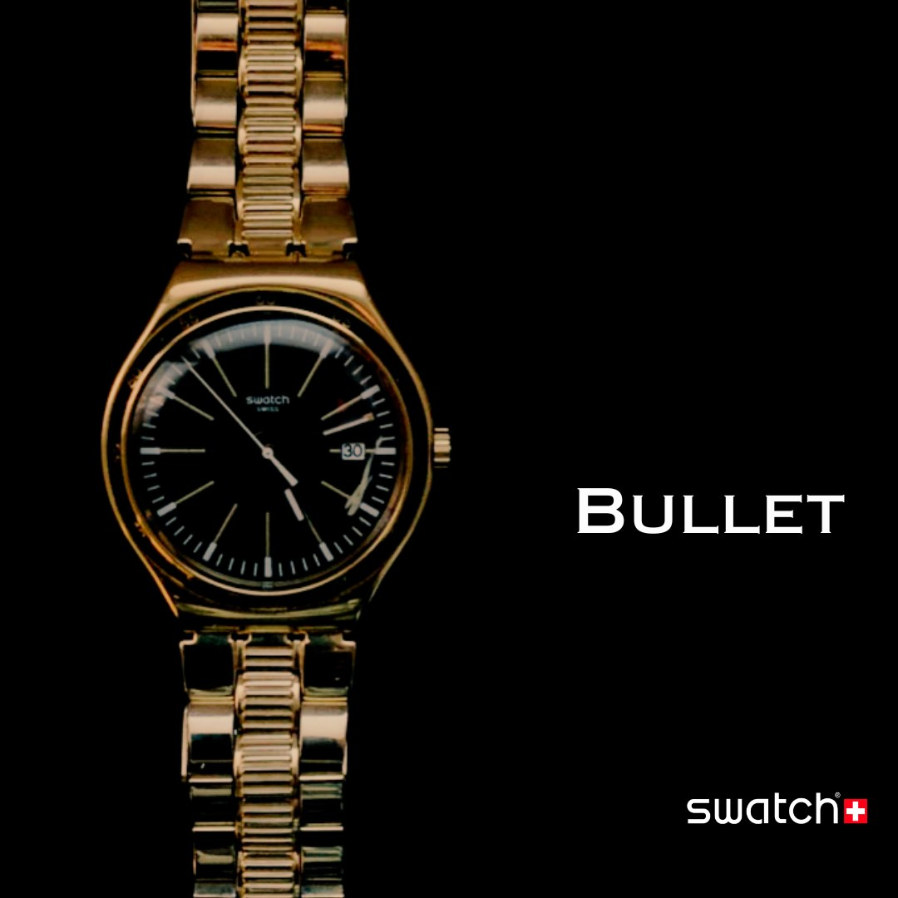

Bullet - Swatch Poster design
Digital Storytelling - advertisement
Me and my team created a video commercial about this remastered version of the swatch watch. We created a poster design for the advertisement and a video commercial for the product for our visual storytelling class. We used canva for the poster design and My team created a video for advertising.
